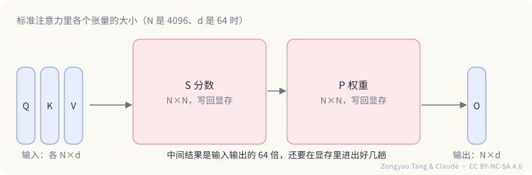
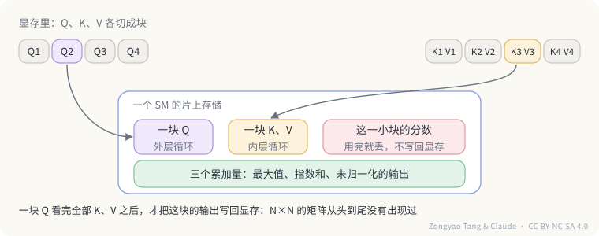

线索是：标准的注意力慢，原因不在运算量，而在几次 N×N 规模的显存读写 → 要避免写出那个 N×N 的矩阵，就得能“一块一块地算 softmax”，在线 softmax 做到了这一点 → 把它和分块、重算合在一起，就是 Flash Attention。这一单元是三条线的汇合点：1.4 的注意力、3.3 的分块、3.5 的归约。
第 4 部分 · 算子与 kernel4.4 Flash Attention
这一单元回答注意力的瓶颈到底在哪？为什么“算得一样多”却能快好几倍？
承接 1.4 的注意力、3.5 的归约和 3.3 的分块：三者在这里汇合。
讲解
1标准注意力慢在读写，不在计算
标准实现先算出 N×N 的分数矩阵写回显存，再读出来做 softmax，写回去，再读出来乘 V。序列一长，这几次 N² 规模的读写就成了主要开销，而且显存占用也随 N² 增长。
标准实现的步骤。 设序列长度 N，每个头的维度 d。
- S = Q × Kᵀ：得到 N×N 的分数矩阵，写回显存。
- P = softmax(S)：把 S 读出来，逐行做 softmax，把 N×N 的 P 写回显存。
- O = P × V：把 P 读出来，乘以 V，得到 N×d 的输出。
（中间还有掩码和 dropout，各自又把 N×N 的矩阵读写一遍。）
比较一下大小。 输入 Q、K、V 和输出 O 都是 N×d。中间的 S 和 P 是 N×N。N = 4096、d = 64 时，N×N 是 N×d 的 64 倍。也就是说，真正有用的输入输出只有很少的数据，而中间结果大了几十倍，还要在显存里进出好几趟。

按面积画的大小对比（示意） 为什么这是瓶颈。 FlashAttention 的论文给了一组数字来说明差距：A100 的显存有几十 GB，带宽约 1.5–2 TB/s；每个 SM 上的片上存储只有 192 KB，但带宽估计在 19 TB/s 左右。片上快一个量级，但小得多。标准实现让 N×N 的中间矩阵完全走显存这条慢路。softmax 本身的运算量很小，是典型的带宽受限（4.1 的那张表）；于是整个注意力的时间被这几趟 N² 规模的读写主导。
显存占用也是 N²。 S 和 P 都要存；训练时为了反向，P 还得一直留着（2.2）。序列长度翻倍，这部分显存变成四倍。在 Flash Attention 之前，这是限制上下文长度的主要因素。
此前的思路为什么效果不好。 很多工作试图减少注意力的运算量：用近似的办法，只算一部分位置对。论文开头指出，这些方法降低了理论上的计算复杂度，实际运行时间却往往没有相应地缩短，因为它们没有针对真正的瓶颈。
Flash Attention 的出发点正好相反：运算量一点不减（甚至略增），只减少显存的读写。论文把这叫作“意识到 IO 的”算法。这是 0.1 里“先问它在等什么”最有说服力的一个例子：优化了不是瓶颈的东西，再漂亮也没用。
打个比方像抄写：先把一张巨大的中间表格誊到黑板上，再一格一格抄回来，可这张表最后根本用不着。
所以减少显存读写（IO-aware）比减少运算量更关键：Flash Attention 的运算量甚至略多，却快了好几倍。
出处CUDA for LLMs 第 8 章 中间矩阵要写回 HBMCUDA for LLMs 第 8 章 核心思路FlashAttention 论文 第 1 页 摘要：注意力算法要意识到 IOFlashAttention 论文 第 3 页 §2.1 显存与片上存储的带宽差距FlashAttention 论文 第 4 页 标准注意力的显存访问- 要不让 N×N 的矩阵落地，就得一块一块地处理。可 softmax 需要看完一整行才能归一化。这是要解决的第一个难题。
2在线 softmax：不必看完整行，也能算对
softmax 需要整行的最大值和指数和。在线算法边读边维护“目前的最大值 m”和“目前的指数和 l”：遇到更大的值时，把之前累加的结果乘上 exp(旧 m − 新 m) 修正一下，再继续累加。输出也按同样的系数修正。
softmax 的定义。 对一行分数 s₁…s_N，第 i 个输出是 exp(sᵢ) ÷ Σⱼ exp(sⱼ)。分母要所有的分数。实际计算时为了防止 exp 溢出，还会先减去这一行的最大值 m：exp(sᵢ − m) ÷ Σⱼ exp(sⱼ − m)。结果不变，但又多了一个“要看完整行才知道”的量。
把一行分成两块来想。 假设先看到前一半分数，算出了它们的最大值 m₁ 和指数和 l₁ = Σ exp(sⱼ − m₁)。现在后一半来了，它们的最大值是 m₂。
- 整行的最大值：m = max(m₁, m₂)。
- 前一半的指数和当初是以 m₁ 为基准算的，现在基准换成了 m。因为 exp(s − m) = exp(s − m₁) × exp(m₁ − m)，所以只要把 l₁ 乘上一个系数 exp(m₁ − m)，就换算成了新基准下的值。不需要回头重新看前一半的每个分数。
- 后一半的指数和直接以 m 为基准算，加上去：l = l₁ × exp(m₁ − m) + Σ_后一半 exp(sⱼ − m)。
这就是全部的技巧：一个指数和，换基准只需要乘一个系数。 所以可以一块一块地读入分数，只维护两个数（当前最大值 m、当前指数和 l），每来一块就更新一次。
输出也能这样累加。 注意力最终要的不是 softmax 的结果本身，而是它乘以 V 之后的加权和 O = Σⱼ pⱼ vⱼ。同样的道理：先不除以分母，累加“未归一化的加权和” Σ exp(sⱼ − m) vⱼ；每次最大值更新，把已经累加的部分乘上同一个修正系数；全部块处理完之后，再除以最终的 l。
它和 3.5 的关系。 3.5 讲并行归约时有一条线索：很多看起来必须“从头到尾顺序做”的计算，只要找到合适的中间状态，就能拆成可以分段、可以合并的形式。求和的中间状态是部分和；这里的中间状态是（最大值，指数和，未归一化的输出）这三样，合并两段的规则就是上面的换基准公式。在线 softmax 就是 softmax 的“可分段”形式。
数值上。 结果和一次算完在数学上完全相等，只在浮点舍入的最后几位上有差别（4.1 讲的正常误差）。所以 Flash Attention 是精确的注意力，不是近似。
动手：用几行 Python 验证在线 softmax
下面的代码把一行分数分成若干块，用在线的办法算“softmax 后对 v 的加权和”，再和一次算完的结果比较。可以直接在解释器里运行。
import torch torch.manual_seed(0) s = torch.randn(1000) * 5 # 一行分数 v = torch.randn(1000) # 每个位置的值 # 一次算完 ref = (torch.softmax(s, dim=0) * v).sum() # 在线：每次只看 100 个 m = torch.tensor(float("-inf")) # 目前的最大值 l = torch.tensor(0.0) # 目前的指数和（以 m 为基准） o = torch.tensor(0.0) # 目前未归一化的加权和 for i in range(0, 1000, 100): sb, vb = s[i:i+100], v[i:i+100] m_new = torch.maximum(m, sb.max()) scale = torch.exp(m - m_new) # 旧结果换基准的系数 p = torch.exp(sb - m_new) # 这一块在新基准下的指数 l = l * scale + p.sum() o = o * scale + (p * vb).sum() m = m_new print(ref.item(), (o / l).item()) # 两个数应该只在最后几位不同可以试着改的地方：
- 把块大小从 100 改成 1 或 1000，结果不变。块大小只影响效率，不影响正确性。
- 把
scale那一项去掉，结果就错了，而且错得很明显。这说明换基准是必需的。 - 把分数的幅度从 5 改成 500。一次算完的
torch.softmax内部做了减最大值的处理，不会溢出；在线的版本因为始终以当前最大值为基准，同样不会溢出。
Flash Attention 的 kernel 里，这个循环的每一轮处理的不是一行的一段，而是“一块 Q 对一块 K、V”，m、l、o 都是按行的向量；逻辑和这十几行完全一样。
打个比方像用不同的基准货币记账：基准一换，之前的总额乘一个汇率就能换算过来，不用把每一笔重新算一遍。
所以注意力可以按 K、V 的块逐块计算，每块的中间结果都留在共享内存和寄存器里，永远不需要完整的 N×N 矩阵。
出处CUDA for LLMs 第 8 章 重新缩放累加和CUDA for LLMs 第 8 章 实现FlashAttention 论文 第 5 页 分块计算 softmax 与统计量Online normalizer calculation for softmax（在线 softmax 的出处）- 有了在线 softmax，注意力可以按块计算了。剩下的问题是把它安排到 GPU 的存储层次上，并且让反向也不需要那个 N×N 的矩阵。
3分块 + 重算：多算一点，少搬很多
前向时一块 Q 留在片上，依次读入 K、V 的各块，算完就丢；只保存每行的统计量（最大值和指数和）。反向时不读存好的注意力矩阵，而是用这些统计量把需要的那一块重新算出来。
前向。 把 Q 切成若干块，K 和 V 也切成若干块。块的大小选成“一块 Q、一块 K、一块 V 和它们的中间结果，刚好能放进一个 SM 的片上存储”。
- 外层循环：取一块 Q，读进片上存储。为这一块的每一行准备好在线 softmax 的三个累加量（最大值、指数和、未归一化的输出）。
- 内层循环：依次取每一块 K 和 V，读进片上存储。算这块 Q 和这块 K 的分数（一个小矩阵乘法），按上一节的规则更新三个累加量。这一小块分数用完就丢。
- 内层循环结束：这块 Q 的每一行都看过了全部的 K、V。把输出除以指数和，写回显存。同时把每一行的最大值和指数和合成一个数（它们的对数和）存下来，留给反向。

外层取一块 Q，内层依次取每一块 K、V （这是论文算法 1 的结构，实际实现里内外层的顺序可以对调，Flash Attention 的第二版就换了循环的顺序以便更好地并行。）
读写了多少。 输入 Q、K、V 从显存读入，输出 O 写回，再加每行一个统计量。N×N 的分数矩阵和概率矩阵从头到尾没有出现在显存里，它们只是一小块一小块地在片上存储里出现又消失。论文证明了显存访问的次数从标准做法的“和 N² 成正比”降了下来，降低的倍数取决于片上存储能放下多大的块。额外的显存占用从 N² 变成了 N。
运算量没有减少：每一对位置的分数仍然都算了一遍。
反向。 2.2 讲过，自动求导会把前向的中间结果保存下来给反向用。照这个办法，就得保存 N×N 的概率矩阵，前面的功夫就白费了。
Flash Attention 自己定义反向（2.2 提到的自定义
autograd.Function）：- 前向只保存输出 O 和每行的那个统计量，都是 N 的量级。
- 反向时再做一遍同样的分块循环：读入一块 Q 和一块 K，重新算出这一小块分数；有了保存的统计量，直接就能得到这一小块的概率，不需要再走一遍在线累加；用它算出对 Q、K、V 的梯度贡献，累加；丢掉这一小块。
反向多做了一次“Q 乘 Kᵀ”的计算。但 4.2 讲过这种取舍：重算的是片上的小矩阵乘法，省掉的是 N² 规模的显存读写，对一个带宽受限的运算，这是划算的。论文报告的结果是：尽管运算量更多，实际运行时间反而明显更短。
三个思想的汇合。
- 分块：把数据搬到近处多用几次（3.3）。
- 在线 softmax：把归约拆成可以分段的形式（3.5）。
- 重算：用计算换存储（2.2、4.2）。
单独看都不新，合在一起解决了一个长期卡住上下文长度的问题。7.3 的 Ring Attention 又把同一套办法从“一块芯片内的各级存储”搬到了“多张卡之间”。
打个比方像考试时不把草稿纸带回家：需要时把那一步重新推一遍，比保存一大摞草稿更省事。
所以显存占用从随 N² 增长变成随 N 增长，长上下文才成为可能；“用重算换显存”的思路在训练里（activation checkpointing）也随处可见。
出处CUDA for LLMs 第 8 章 分块与重算第 12 讲代码 flash_attention.cuFlashAttention 论文 第 4 页 §3.1 分块与重算FlashAttention 论文 第 5 页 算法 1 与定理 1FlashAttention 论文 第 6 页 定理 2：显存访问次数FlashAttention 论文 第 2 页 图 1 分块的示意与加速
串起来
标准注意力慢在读写：N×N 的中间矩阵要在显存里进出好几次。在线 softmax 让每一行可以分块计算、边算边修正。Flash Attention 把 K、V 分块读进片上存储，算完就丢，只留每行的两个统计量；反向时用它们重算需要的部分。显存从随 N² 增长变成随 N 增长。
考考自己
不看讲解，用自己的话讲一遍。
- 标准的注意力实现慢在哪里？为什么说它的瓶颈是读写而不是计算？
- 在线 softmax 是怎样做到“只看一部分数据就能开始算，最后结果仍然正确”的？
- Flash Attention 的前向是怎样分块的？反向时没有保存注意力矩阵，梯度是怎么算出来的？
术语
- online softmax
- 在线 softmax
- IO-aware
- IO 感知
- recomputation
- 重计算
- SRAM
- 片上存储